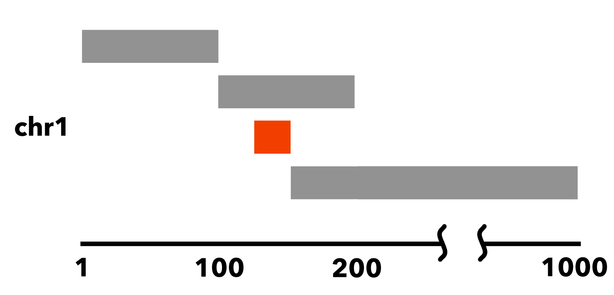

6.1.2. bedextract¶
The bedextract utility performs three primary tasks, with the goal of doing them very quickly:
- Lists all the chromosomes in a sorted input BED file.
- Extracts all the elements in a sorted input BED file, for a given chromosome.
- Finds elements of one BED file, which overlap elements in a second, reference BED file (when specific element criteria are satisfied).
One might ask why use this utility, when the first two tasks can already be performed with common UNIX text processing tools, such as cut, sort, uniq, and awk, and the third task can be performed with bedops with the --element-of -1 options?
The bedextract utility does the work of all those tools without streaming through an entire BED file, resulting in massive performance improvements. By using the hints provided by sorted BED input, the bedextract tool can jump around, seeking very quick answers to these questions about your data.
6.1.2.1. How it works¶
Specifically, sorting with sort-bed allows us to perform a binary search:
- We jump to the middle byte of the BED file, stream to the nearest element, then parse and test the chromosome name.
- Either we have a match, or we jump to the middle of the remaining left or right half (decided by dictionary order), parse and test again.
- We repeat steps 1 and 2 until we have matches that define the bounds of the target chromosome.

To indicate the kind of speed gain that the bedextract tool provides, in local testing, a naïve listing of chromosomes from a 36 GB BED input using UNIX cut and uniq utilities took approximately 20 minutes to complete on a typical Core 2 Duo-based Linux workstation. Retrieval of the same chromosome listing with bedextract --list-chr took only 2 seconds (cache flushed—no cheating!).
Tip
While listing chromosomes is perhaps a trivial task, 1200 seconds to 2 seconds is a 600-fold speedup. Similar improvements are gained from using --chrom and --faster options with other core BEDOPS tools like bedops and bedmap. If your data meet the criteria for using this approach—and a lot of genomic datasets do—we strongly encourage adding this to your toolkit.
6.1.2.2. Inputs and outputs¶
6.1.2.2.1. Input¶
Depending on specified options, bedextract requires one or two sorted BED files.
Note
It is critical that inputs are sorted as the information in a sorted file allows bedextract to do its work correctly. If your datasets are output from other BEDOPS tools, then they are already sorted!
6.1.2.2.2. Output¶
Depending on specified options, the bedextract program will send a list of chromosomes or BED elements to standard output.
Tip
The use of UNIX-like standard streams allows easy downstream analysis or post-processing with other tools and scripts, including other BEDOPS utilities.
6.1.2.3. Usage¶
The --help option describes the functionality available to the end user:
bedextract
citation: http://bioinformatics.oxfordjournals.org/content/28/14/1919.abstract
version: 2.4.0
authors: Shane Neph & Alex Reynolds
Every input file must be sorted per sort-bed.
USAGE:
0) --help or --version Print requested info and exit successfully.
1) --list-chr <input.bed> Print all unique chromosome names found in <input.bed>.
2) <chromosome> <input.bed> Retrieve all rows for chr8 with: bedextract chr8 <input.bed>.
3) <query.bed> <target> Grab elements from the <query.bed> that overlap elements in <target>. Same as
`bedops -e -1 <query.bed> <target>`, except that this option fails silently
if <query.bed> contains fully-nested BED elements. If no fully-nested
element exists, bedextract can vastly improve upon the performance of bedops.
<target> may be a BED or Starch file (with or without fully-nested elements).
Using '-' for <target> indicates input (in BED format) comes from stdin.
6.1.2.3.1. Listing chromosomes¶
Use the --list-chr option to quickly retrieve a listing of chromosomes from a given sorted BED input.
For example, the following lists the chromosomes in an example BED file of FIMO motif hits (see the Downloads section):
$ bedextract --list-chr motifs.bed
chr1
chr10
chr11
chr12
...
chr9
chrX
Note
The bedextract --list-chr operation only works on BED files. If you have a Starch file, use unstarch --list-chr to list its chromosomes.
6.1.2.3.2. Retrieving elements from a specific chromosome¶
To quickly retrieve the subset of elements from a sorted BED file associated with a given chromosome, apply the second usage case and specify the chromosome as the argument.
For example, to retrieve chrX from the same motif sample:
$ bedextract chrX motifs.bed
chrX 6775077 6775092 +V_SPZ1_01 4.92705e-06 + GTTGGAGGGAAGGGC
chrX 6775168 6775179 +V_ELF5_01 8.57585e-06 + TCAAGGAAGTA
chrX 6777790 6777799 +V_CKROX_Q2 8.90515e-06 + TCCCTCCCC
...
Note
The bedextract <chromosome> operation only works on BED files. If you have a Starch file, use unstarch <chromosome> to list the elements associated with that chromosome.
6.1.2.3.3. Retrieving elements which overlap target elements¶
A common bedops query involves asking which elements overlap one or more bases between two BED datasets, which we will call here Query and Target.
One can already use bedops --element-of -1 to accomplish this task, but if certain specific criteria are met (which we will describe shortly) then a much faster result can often be obtained by instead using bedextract.
Three criteria make the use of bedextract in this mode very successful in practice, with potentially massive speed improvements:
- Query is a huge file.
- There are relatively few regions of interest in Target (say, roughly 30,000 or fewer).
- There are no fully-nested elements in Query (but duplicate coordinates are fine).
6.1.2.3.3.1. What are nested elements?¶
An example of a sorted BED file which contains a nested element follows:
chr1 1 100
chr1 100 200
chr1 125 150
chr1 150 1000
While this dataset is sorted, the element chr1:125-150 is entirely nested within chr1:100-200:
{kind=link}
Note
Fully-nested elements are not a problem for the other two bedextract features: 1) Listing all chromosomes, and 2) Retrieving all information for a single chromosome.
Fully-nested elements are only an issue if they exist in the Query dataset. Results are not affected if the Target dataset contains nested elements. Overlapping (but not fully-nested) elements in the Query input file are fine, as are duplicated genomic positions.
Note
Our lab works with BED data of various types: cut-counts, hotspots, peaks, footprints, etc. These data generally do not contain nested elements and so are amenable to use with bedextract for extracting overlapping elements.
However, other types of Query datasets can be problematic. FIMO search results, for example, might cause trouble, where the boundaries of one motif hit can be contained within another larger hit. Or paired-end sequence data, where tags are not of a fixed length. Be sure to consider the makeup of your BED data before using bedextract.
6.1.2.3.3.2. Demonstration¶
To demonstrate this use of bedextract, for our Query dataset we will use the Map example from our bedmap documentation, which contains raw DNaseI hypersensitivity signal from a human K562 cell line (see the Downloads section for sample data):
$ cat query.bed
chr21 33031165 33031185 map-1 1.000000
chr21 33031185 33031205 map-2 3.000000
chr21 33031205 33031225 map-3 3.000000
chr21 33031225 33031245 map-4 3.000000
...
chr21 33032445 33032465 map-65 5.000000
chr21 33032465 33032485 map-66 6.000000
Our Target data is simply an ad-hoc BED region which overlaps part of the Query dataset, stored in a Starch-formatted archive:
$ unstarch target.starch
chr21 33031600 33031700
We can now ask which elements of Query overlap the element in Target:
$ bedextract query.bed target.starch
chr21 33031585 33031605 map-22 26.000000
chr21 33031605 33031625 map-23 27.000000
chr21 33031625 33031645 map-24 29.000000
chr21 33031645 33031665 map-25 31.000000
chr21 33031665 33031685 map-26 31.000000
chr21 33031685 33031705 map-27 37.000000
Our Target dataset is a Starch-formatted file. Note that we can also use “-” to denote standard input for the Target dataset, as well as a regular BED- or Starch-formatted file. In other words, we can pipe target elements from another process to bedextract, e.g. we can query for an ad-hoc element as follows:
$ echo -e "chr21\t33031590\t33031600" | bedextract query.bed -
chr21 33031585 33031605 map-22 26.000000
Instead of an ad-hoc element as in this example, however, target elements could just as easily be piped in from upstream bedmap or bedops operations, or extracted elements from a Starch archive, etc.
Tip
The output of this particular use of bedextract is made up of elements from the Query dataset and is therefore sorted BED data, which can be piped to bedops, bedmap and other BEDOPS utilities for further downstream processing.
Note
Though bedextract only supports the overlap equivalent of bedops --element-of -1, other overlap criteria are efficiently supported by combining bedextract with bedops.
Specifically, we can quickly filter through just the results given by bedextract and implement other overlap criteria with bedops, e.g.:
$ bedextract query.bed target.bed | bedops -e -50% - target.bed
6.1.2.4. Downloads¶
- Sample FIMO motifs
- Sample Query dataset: DHS signal
- Sample Target dataset: ad-hoc coordinates

Table Of Contents
- 6.1.2. bedextract